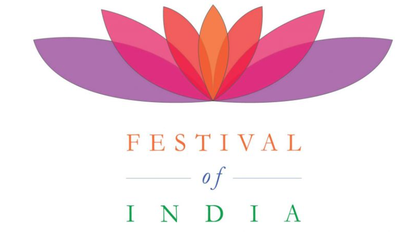

|  |
| Home | Holi | Diwali | Ugadi | Navratri | Onam | Pongal | Ganesh Chaturthi | Maha Shivratri | Janmashtami |
Ganesh Chaturthi also known as Vinayaka Chaturthi or Vinayaka Chavithi or Vinayagar Chaturthi, is a Hindu festival birthday of Hindu deity Lord Ganesh. The festival is marked with the installation of Lord Ganesha's murtis (devotional representations of a deity) privately in homes and publicly on elaborate pandals (temporary stages). Observances include chanting of Vedic hymns and Hindu texts, such as prayers and vrata (fasting). Offerings and prasada from the daily prayers, that are distributed from the pandal to the community, include sweets such as modak as it is believed to be a favourite of Lord Ganesha. The festival ends on the tenth day after start, when the Murti is carried in a public procession with music and group chanting, then immersed in a nearby body of water such as a river or sea, called visarjana on the day of Ananta Chaturdashi. In Mumbai alone, around 150,000 Murtis are immersed annually.
The festival celebrates Ganesha as the God of New Beginnings and the Remover of Obstacles as well as the god of wisdom and intelligence and is observed throughout the Indian subcontinent by Hindus, especially in the states such as Maharashtra, Madhya Pradesh, Karnataka, Odisha, Telangana, Andhra Pradesh, Tamil Nadu and Goa, as well as Nepal. Ganesh Chaturthi is also observed by the Hindu diaspora elsewhere such as in Australia, New Zealand, Canada, Singapore, Malaysia, Sri Lanka, Trinidad and Tobago, Guyana, Suriname, other parts of the Caribbean, Fiji, Mauritius, South Africa, the United States, and Europe. In the Gregorian calendar, Ganesh Chaturthi falls between 22 August and 20 September every year.